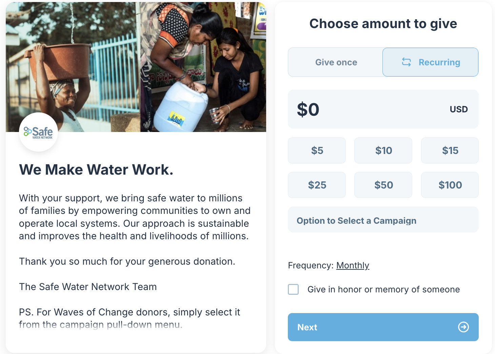
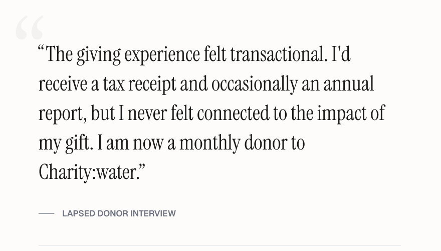
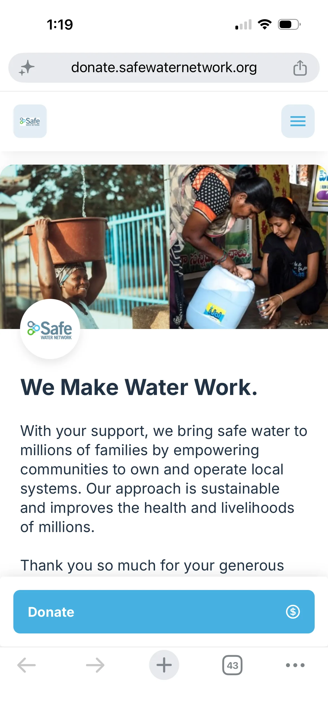
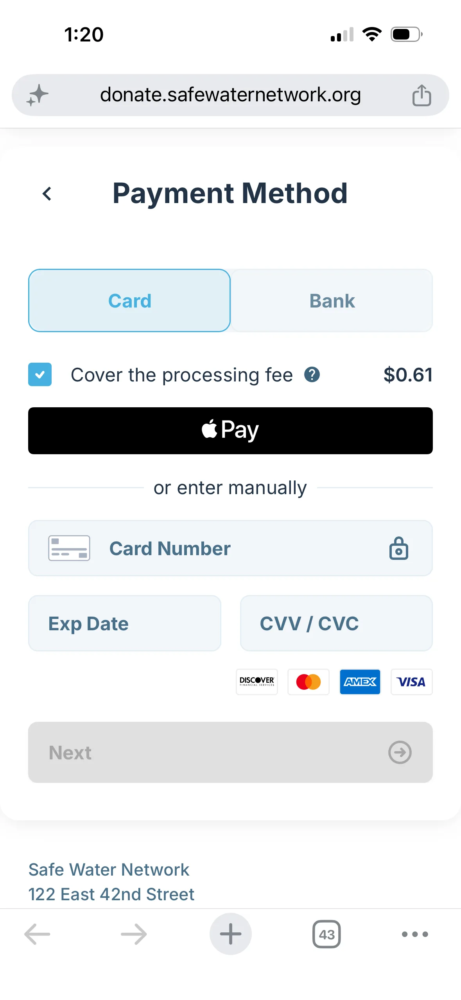
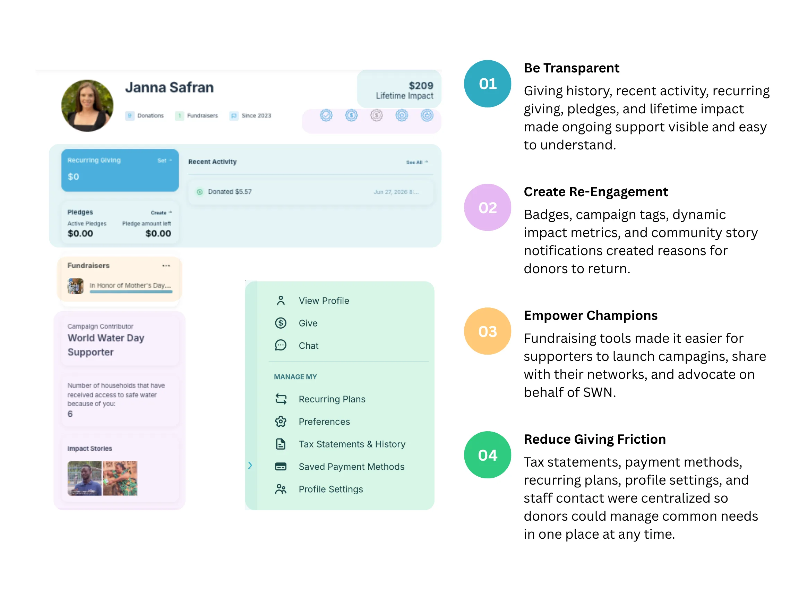

Redesigning the Digital Giving Experience at Safe Water Network
How user research and a redesigned funnel reduced abandonment by 63% and turned one-time givers into engaged donors.

Overview
Safe Water Network (SWN) is an international nonprofit organization working to provide reliable access to safe water across Ghana and India. As part of the fundraising and communications team, I led the redesign of the organization's digital giving funnel. The existing donation experience required donors to navigate multiple pages before reaching the donation form, complete extensive data entry upfront, and received minimal reinforcement after making a gift.
The goal of this project was to improve the donor experience, reduce friction throughout the giving journey, and increase donation conversion rates while strengthening donor engagement and stewardship.
- 1Research & Discovery
- 2User Journey
- 3Design
- 4Usability Testing
- 5Business Impact
Research & Discovery
Mixed-Method Donor Research
Before redesigning the donation experience, I conducted a mixed-methods research effort to understand donor behavior, identify friction points, and uncover opportunities to improve conversion and long-term engagement.
Research inputs included:
- Eight years of donor and fundraising data
- Interviews with current and lapsed donors
- Competitive analysis of peer nonprofit giving experiences
- Audit of existing digital giving funnel
- Usability testing of the existing donation flow
The research revealed recurring themes around donor trust, perceived effort, donation psychology, and post-donation engagement. These findings directly informed the redesigned information architecture, giving flow, stewardship experience, and donor communications strategy.

FINDING 1
Donors Couldn't See Their Impact
The donation experience felt transactional rather than mission-driven. Donors struggled to understand where their money was going, who it was helping, and what made Safe Water Network different from other nonprofits. Beyond a tax receipt, donors had few opportunities to engage with the organization, making the donation experience a critical moment to build trust, communicate impact, and strengthen long-term donor relationships.
FINDING 2
Donation Amounts Created Friction
The original donation page promoted giving levels of $100+, which felt inaccessible to many donors. Interviews revealed that smaller contributions felt "not enough", creating a psychological barrier that prevent some supporters from giving at all.
FINDING 3
Supporters Wanted to Fundraise
Current donors, families, and younger supporters expressed interest in raising money through birthdays, events, in memoriam, and peer-to-peer campaigns. Competitive research showed that leading nonprofit organizations actively promoted peer fundraising, creating additional revenue streams with minimal staff involvement.
FINDING 4
Returning Donors Were Treated Like First-Time Donors
Returning donors were required to re-enter payment information for every gift. This unnecessary friction made repeat giving more difficult than it needed to be and created avoidable barriers to donor retention.
Experience Audit
Rather than jumping directly into redesign, I evaluated the existing donation experience to understand where donor needs and business goals were misaligned. Combined with donor research, I identified key issues around trust, impact clarity, suggested giving levels, and form friction.

User Journey
Mapping the end-to-end donation experience revealed that the primary issue wasn't a single interaction — it was the overall journey. While the existing experience processed donations, it treated giving as a one-time transaction rather than the beginning of a long-term donor relationship.
Research showed that donors needed different experiences depending on where they were in their giving journey. First-time donors needed trust and context before being asked to give, while returning donors expected a faster path that recognized their prior relationship with the organization.
The redesigned journey shifted the focus from collecting a donation to cultivating a donor. Each interaction was designed to build trust, reduce friction, or strengthen engagement after a gift was made. This journey map became the blueprint for the redesigned information architecture, checkout flow, donor segmentation, and post-donation experience.

Design
I guided the redesign by putting myself in the donor's shoes and asking what questions they needed answered at each stage of the journey. Those questions became the structure for the rebuild, ensuring each design decision reduced uncertainty, built trust, or created a clearer path for continued engagement.
Can I Trust This Organization? Why Should I Donate Here?
The original experience sent donors directly do a third-party form with limited organizational context and a long upfront request for information.
I redesigned the landing page to bring the giving experience onto SWN's branded platform, lead with gratitude, and introduce the organization's model before the ask — helping donors understand who they were supporting and why their gift to SWN mattered.

What Impact Am I Making?
The original experience presented donation amounts as numbers, leaving donors to infer what their contribution could actually support.
I translated each suggested gift into a concrete outcome — from funding a water quality test to helping keep a girl in school — so donors could evaluate their contribution through the impact it could create.
A/B testing compared impact narratives across water safety, healthcare, education, household stability, and livelihoods to understand which messages most influenced donor engagement and giving behavior.
Examples:
$5 — Water Quality Test: Funds one water quality test, keeping 100,000 people safe
$25 — A Year in School: Helps one girl stay in school for a year by freeing up the hours spent walking for water.
$50 — Water for a Home and a Livelihood: Helps a local business owner provide safe services to their community for a year
How Do I Want to Give?
Research showed that donors brought different motivations and priorities to giving, yet the original experience offered a single, undifferentiated path.
I introduced more intentional giving choices, allowing donors to make an unrestricted gift, support a specific campaign or country program, choose their giving frequency, or give in honor or memory of someone. Rather than forcing every donor through the same transaction, the redesigned experience created space for donors to shape the meaning and direction of their gift.

Why Are You Asking for This Information?
The original form asked for too much at once, creating cognitive load, personal-information fatigue, and payment friction at the stage where most donors abandoned the flow.
Request Only What's Needed
Personal information was separated from payment details, reducing the amount of information donors had to process at one time.

Make Payment Faster
Digital and saved payment options created a quicker path through checkout, particularly for returning donors

Confirm with Transparency
Donors could review their gift amount, campaign designation, payment details, privacy choices, processing-fee coverage, and final total before submitting.

What Happens After I Donate?
The original journey ended with a generic confirmation message.
I redesigned the post-donation moment as a human thank-you, featuring a video of community members across Ghana and India acknowledging the donor's gift. From there, donors were invited to learn more about SWN's work or continue into their profile, turning confirmation into the first step of continued engagement.

How Do I Stay Connected After Giving?
I designed a donor profile to extend the relationship beyond the donation itself. The profile brought together giving history, impact updates, fundraising tools, and self-service account management so donors could understand their impact, stay connected, and continue engaging with SWN over time.

Usability Testing
I created a fully-functional, high-fidelity prototype of the new donor journey. I tested the redesigned donor journey across four iterative rounds with 87 participants, including current, lapsed, and former donors, staff, interview participants, and new users. Each round was followed by rapid design adjustments before testing with a new group, helping evaluate not only usability, but how design choices influenced giving decisions, emotional connection, and continued engagement.
Business Impact
Within six months of launching the redesigned donor journey, online donations increased by 30% and donor engagement rose by 35%. The new experience also broadened Safe Water Network's donor base, surfacing an unexpected user group: parents using the profiles, badges, and fundraising tools to introduce children to philanthropy. The redesign also supported younger donors, such as college students and early professionals, by making giving more accessible, personal, and socially sharable. The peer-to-peer fundraising tools created a new acquisition and advocacy channel for Safe Water Network .In the first six months, donors launched 11 fundraisers on behalf of the organization, raising $80k+ through their own networks.
Strategic value: Donor behavior data helped shaped five-year goals across fundraising, brand development, marketing, communications, and thought leadership. Together, these outcomes showed that the redesign did more than improve checkout - it helped turn donors into repeat supporters, advocates, and community champions.
12
Peer-to-peer fundraisers launched New donor advocacy channel
Learnings
- UX strategy starts with the full relationship, not a single touchpoint: Looking across the full donor journey revealed opportunities to build trust, clarify impact, and create reasons for donors to stay engaged post-donation.
- Reducing friction can mean adding context- the redesign added steps, but each one reduced uncertainty and helped donors feel more confident in their decision.
- Existing data can reveal new strategic opportunities: Donor feedback was already showing up across analytics, emails, support requests, and past interactions. Synthesizing those sources revealed insights that shaped fundraising, brand positioning, thought leadership, and long-term strategy.
See the live site